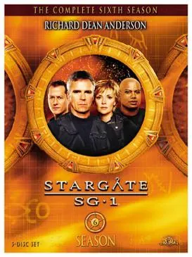

The genetics
The episode is built around a machine that rewrites DNA. The Goa'uld Nirrti uses her DNA resequencer on the people of a planet, who believe she is a goddess healing them; in fact her experiments leave them deformed, give some of them psychic powers such as telekinesis and telepathy, and kill others, who dissolve into water. She also uses the machine on captured team members, altering Carter's DNA and analysing that of Jonas Quinn, whose genome she finds unusual. The available source does not say what Nirrti hopes to achieve, only that she experiments on people without their informed consent and that the episode presents her as a deceitful villain. Her victims finally turn against her, and the knowledge taken from her mind is used to reverse the changes. Rewriting an adult's genome with a machine, let alone producing psychic powers, is science fiction.
How genetics is portrayed
- Overall portrayal of genetics
- negative DNA manipulation is the cruel experimentation of a false goddess on deceived people, and the story ends with the machine to be destroyed.
- Outcome of the genetic intervention
- negative The resequencing deforms the villagers and kills Alebran and Evanov; only Carter's changes are reversed, using knowledge taken from Nirrti's mind.
- Nirrti
- villain Aim: not stated (not applicable). The Goa'uld uses a DNA resequencer on villagers who think she is healing them, deforming and killing them, and on the captured team; the episode presents her as a deceitful villain, and her own victims kill her. The source does not state the aim of her experiments.
The story
In this Stargate SG-1 episode, a Russian team brings a Jaffa, Alebran, back to Stargate Command; he says the Goa'uld Nirrti has been experimenting on his people, and then dissolves into water. SG-1 and the Russian team led by Colonel Evanov travel to Nirrti's fortress, where they find deformed people who have developed powers such as telekinesis and telepathy. They believe that their goddess Nirrti is curing them with a machine, a DNA resequencer. The telepath Eggar uncovers the team's plan to kill Nirrti, and the mutant Wodan, Alebran's brother, imprisons them. Nirrti captures the team, uses the resequencer on Carter and Evanov, and finds that Jonas Quinn's DNA is unusual. Evanov dies like Alebran and Carter's condition worsens. Finally Eggar reads Nirrti's mind and confirms she has deceived them; Wodan kills her, and Eggar, using knowledge taken from her mind, reverses Carter's changes and promises to cure his people and destroy the machine.